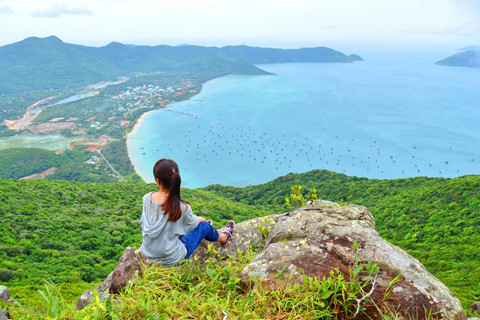

Circuits Vietnam
Les meilleurs circuits au nord du Vietnam
Comparez des circuits de 8, 10 et 15 jours dans le nord du Vietnam : Hanoï, villages, rizières et montagnes. Idées de parcours du carnet de Jo.
Lire l’articleLe carnet de Jo
Découvrez notre sélection de circuits au Vietnam conçus pour vous aider à préparer un voyage authentique, équilibré et adapté à votre rythme. Que vous recherchiez un circuit Vietnam 10 jours, un itinéraire de 2 semaines…
Découvrez notre sélection de circuits au Vietnam conçus pour vous aider à préparer un voyage authentique, équilibré et adapté à votre rythme. Que vous recherchiez un circuit Vietnam 10 jours, un itinéraire de 2 semaines au Vietnam ou un voyage plus complet de 3 semaines au Vietnam, vous trouverez ici des idées détaillées, des conseils pratiques et des suggestions d’étapes incontournables. Du nord montagneux aux plages du centre, en passant par le delta du Mékong, chaque itinéraire est pensé pour offrir une découverte approfondie du pays.
Notre blog rassemble également des propositions de circuit nord Vietnam, des exemples de circuit organisé Vietnam et des inspirations pour un voyage privé Vietnam. Vous y trouverez des informations sur les meilleures périodes de voyage, les temps de trajet, les sites culturels majeurs, les rencontres locales et les expériences hors des sentiers battus. Que vous prépariez un premier séjour ou un voyage sur mesure, ces conseils voyage vous aideront à construire un itinéraire cohérent et enrichissant à travers les incontournables du Vietnam.

4 articles
Circuits Vietnam
Comparez des circuits de 8, 10 et 15 jours dans le nord du Vietnam : Hanoï, villages, rizières et montagnes. Idées de parcours du carnet de Jo.
Lire l’article
Circuits Vietnam
Découvrez mon voyage Hanoi Long Coc 2 jours. Un circuit 2 jours au nord Vietnam entre brume poétique, collines de thé sculptées et culture Muong authentique.
Lire l’article
Circuits Vietnam
Découvrez mon récit de voyage Cao Bang Lang Son 4 jours. Un circuit 4 jours au nord Vietnam inoubliable entre montagnes sacrées et traditions ancestrales.
Lire l’article
Circuits Vietnam
Que faire en 2 jours à Pu Luong et Ninh Binh ? Quelles sont les destinations à visiter lors du voyage à Ninh Binh et Pu Luong ? Merci de consulter l'article de Catherine
Lire l’articleEssayez un autre sujet ou découvrez l’ensemble du carnet.